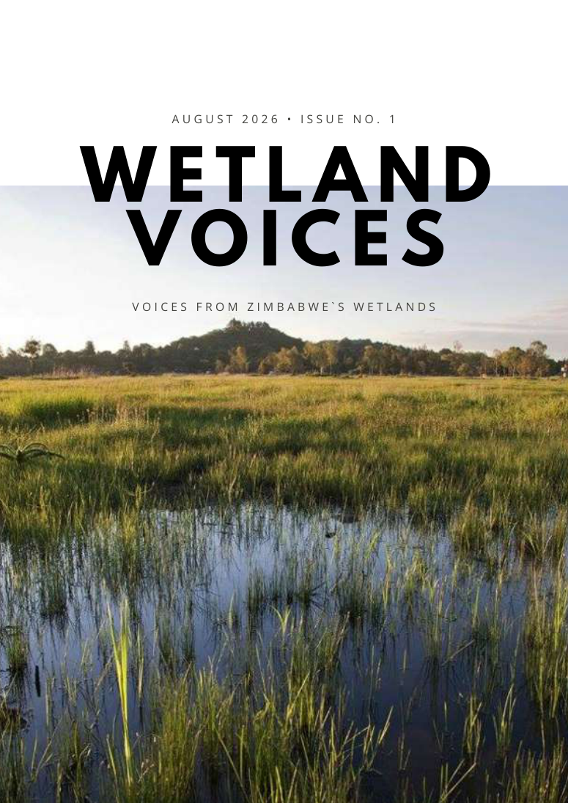
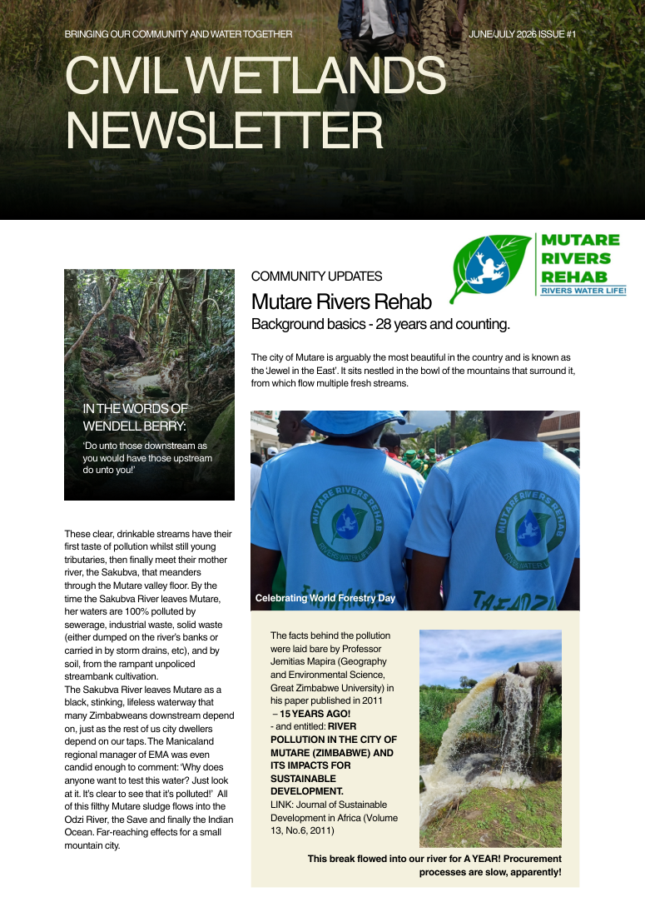

Coalition member directory
Approved profiles, areas of work and organisation links will appear here as members confirm their details.
Profiles being collectedConnecting communities, conservation organisations and evidence to protect the landscapes that sustain us all.
Wetlands filter water, reduce flooding, support biodiversity and help communities adapt to a changing climate. Yet many face increasing pressure from pollution, development and land-use change.
The Civil Society Wetlands Coalition brings together voices and evidence from across Zimbabwe to strengthen awareness, public participation and protection of these essential ecosystems.
Meet the network →Stories, research and perspectives from people working to protect our waterways and natural spaces.
Story summaries are based on coalition publications supplied for this website. These are previews, not independently verified news updates.
When we protect the land that holds our water, we protect the future of every community downstream.
Follow the action guide ↗A shared platform for conservation organisations, community initiatives and partners to share their work.
Approved profiles, areas of work and organisation links will appear here as members confirm their details.
Profiles being collectedSpotlight local initiatives, wetland restoration and citizen-led monitoring from across Zimbabwe.
Submissions welcomeConnect environmental science, traditional knowledge and lived experience to better decisions.
Knowledge exchangeNo organisation is represented as a confirmed coalition member without its approval.
A growing visual record of wetland sites, restoration efforts and community-led action. We will add verified site markers, project stories and evidence layers as information is approved.
Reports, publications and practical guidance to help communities, journalists and decision-makers act on reliable information.
Global framework, resources and wetland conservation guidance.
Visit resource ↗02 / SITE INFORMATIONOfficial information on internationally designated wetland sites.
Visit resource ↗03 / COALITION PUBLICATIONSCommunity reporting, local cases and civil society perspectives.
Explore publications ↓Read coalition publications and find source material for accurate reporting on Zimbabwe's wetlands.

Ramsar COP15, Monavale, Glen Lorne, Mt Pleasant, Cleveland Dam, Lake Chivero and Manyame, and more.
Publication preview · PDF can be linked once hosted
Community updates and reporting on the Mutare Rivers Rehabilitation initiative and the Sakubva River.
Publication preview · PDF can be linked once hostedFor media requests, interviews and statements, contact the coalition's designated communications representative once appointed.
Use our step-by-step decision guide to understand your options, or report a concern directly to the coalition for review.
Have a community update, wetland photograph, research finding or conservation story to share? Send it to the editorial team for review.
Submission form preview: the coalition must connect its Google Form or submission inbox before submissions can be received. Sensitive location data should not be shared publicly.